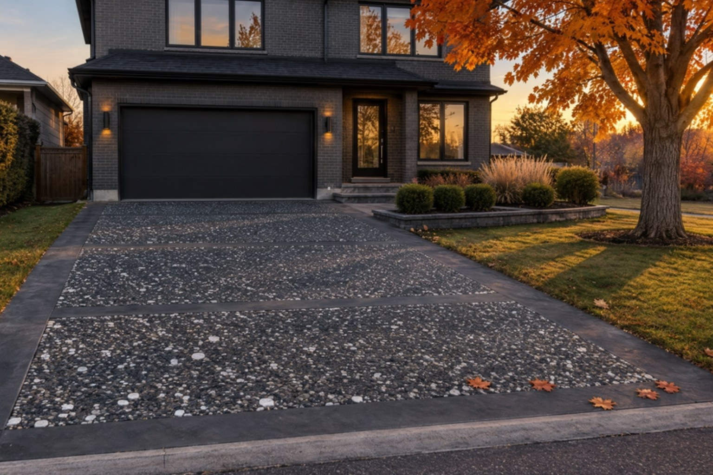
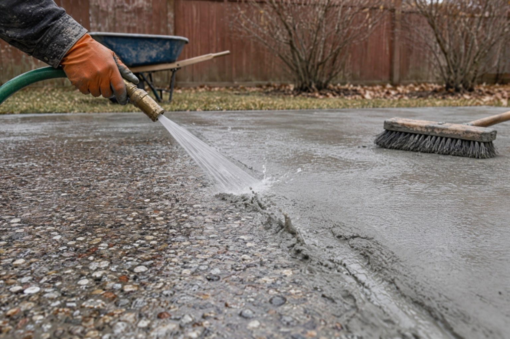
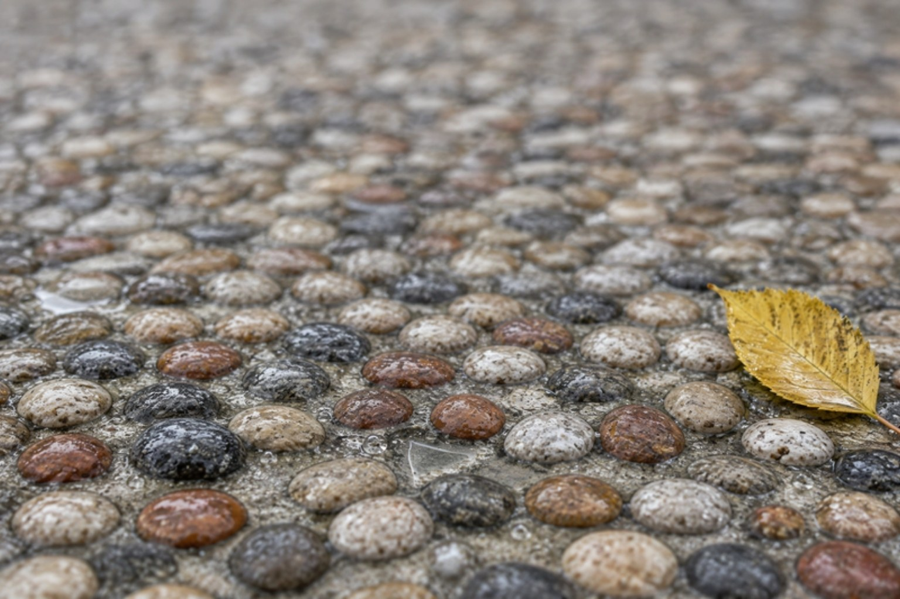

Every spring the same walkway shows up in our estimate photos. Broom-finish concrete poured in the eighties or nineties, scaled by thirty winters of road salt, grey-brown and pitted. The slab is flat, it drains, it has not moved. It just looks tired, and in January it is slippery. The homeowner has two quotes on the counter: one to rip it out and pour new exposed aggregate, one to resurface it. The gap between them is usually five figures.
An exposed aggregate overlay closes that gap. It is a thin, polymer-modified concrete layer bonded to your existing slab, with natural stone seeded into it and the top skin of cement washed away so the pebbles stand proud. You get the finish of a brand-new pour on the concrete you already own, with no demolition and no bin in the driveway.
What an Exposed Aggregate Overlay Actually Is
Traditional exposed aggregate is a finish applied to fresh concrete. The crew pours a new slab, broadcasts decorative stone across the surface, sprays a retarder that stops the top millimetre or two of cement from hardening, then washes that paste off the next morning to reveal the pebbles. The result is a textured, multi-coloured surface that has been a GTA favourite for decades, especially around pools and on long front walkways.
An overlay does the same thing without the new slab. We prepare the existing concrete, repair what needs repairing, apply a bonding primer, and trowel on a polymer-modified overlay roughly a quarter to three-eighths of an inch thick. The stone goes into that layer while it is still workable. Then the same retarder, the same wash, the same sealer. The polymers are what make this possible: they let a thin layer bond permanently to old concrete and flex with it through freeze-thaw instead of cracking off. Done properly, the surface is indistinguishable from a new pour. Done with a hardware-store resurfacer and no primer, it peels in the first winter.
Exposed aggregate is a finish, not a slab. If the slab under your feet is sound, you do not need to buy a new one to get the finish.
Why GTA Homeowners Keep Choosing Exposed Aggregate
- Traction when it matters. The exposed stone gives the surface real texture. Wet in April, icy in January, it grips better than smooth broom finish. For a sloped walkway in Richmond Hill or a pool surround in Oakville, that is a safety feature, not a style choice.
- It hides what Toronto does to concrete. Salt scaling, tire marks, the first scratch from a snow shovel: on a plain grey slab every one of those shows. On a mottled pebble surface they disappear. Exposed aggregate ages better than almost any other exterior finish we install.
- Natural colour that does not fade. The colour comes from real stone, not pigment or paint. A fresh coat of sealer every two to three years brings it back to the day it was washed.
- It suits older homes and new builds. Warm tan and brown river stone sits well beside the red brick of Etobicoke, North York and Scarborough. Charcoal blends suit the dark-brick modern houses going up across Vaughan and Markham.
- It pairs with other finishes. A smooth troweled border around the field, a band of Jewelstone stone texture at the porch, a stamped apron at the garage.

Exposed Aggregate Overlay Cost in Toronto (2026)
Overlays are priced per square foot for flatwork and per project for porches and steps. Access, the amount of crack and spall repair needed before the overlay goes on, the stone blend you choose and how much edge and border detail is involved all move a quote within the ranges below. These are typical 2026 numbers for Toronto and the GTA, and they sit alongside the figures in our full resurfacing cost guide.
| Surface | Installed (GTA, 2026) | Notes |
|---|---|---|
| Exposed aggregate overlay, per sq ft | $11 – $16 | Prep, repair, primer, overlay, stone, wash, sealer |
| Plain or broom-textured overlay, per sq ft | $9 – $13 | For comparison |
| Stamped overlay, per sq ft | $13 – $18 | Pattern and release colour |
| Jewelstone resurfacing, per sq ft | $14 – $22 | Hand-finished stone texture |
| Front walkway, approx. 120 sq ft | $1,500 – $2,400 | Minimum job charges apply on small areas |
| Porch resurfacing (overlay finish) | $2,500 – $6,000 | Size, edges and repair drive the range |
| Steps resurfacing (3–5 risers) | $1,800 – $3,500 | Exposed treads with smooth nosings |
| Single-car driveway overlay, approx. 400 sq ft | $4,400 – $6,400 | Sound slab, standard repair |
| New exposed aggregate pour, per sq ft | $16 – $26 | Plus $1,500–$3,000 removal on a driveway |
The math is simple. A 400 square foot driveway in exposed aggregate overlay lands between $4,400 and $6,400. The same driveway torn out and re-poured runs $6,400 to $10,400 for the new concrete plus $1,500 to $3,000 to remove the old slab. The overlay is 40–60% less and takes days rather than a week plus curing. That saving only holds if the slab underneath deserves it, which is why we test every slab before we quote.
If a quote for an exposed aggregate overlay comes in under $9 per square foot, ask what the primer is and what the polymer content of the overlay is. The usual answer is that there is no primer and the material is a bagged resurfacer meant for patching. That product will hold stone for a season. It will not hold it through a GTA freeze-thaw cycle.
How We Install an Exposed Aggregate Overlay
- Assess the slab. We check for movement, not ugliness. Cracks with both sides at the same height and flaking on sound concrete are fine. A slab that has heaved, settled or crumbled through its depth gets a different conversation, covered in our guide to when to resurface versus pour new.
- Prepare the surface. Pressure wash, then grinding or shot blasting to open the pores of the old concrete. Old sealers and paint come off. An overlay is only as good as what it is bonded to.
- Repair first. Cracks are routed and filled, spalled edges and chipped nosings rebuilt, low spots levelled. This is the same concrete repair work we do on its own, and skipping it is why overlays telegraph old damage within a year.
- Prime. A bonding primer goes on the whole surface. This is the step that makes a quarter-inch layer permanent.
- Place the overlay and the stone. The overlay is troweled on to a consistent depth. Aggregate is broadcast evenly and worked in so each stone is bedded in paste but still near the top. Border bands and control joints are tooled now.
- Retard and wash. A surface retarder goes on as soon as the overlay is finished. Once the body has set, usually the next morning, the top skin of paste is washed and brushed off. A third of each pebble showing is the sweet spot for grip and durability.
- Cure and seal. Several days of curing, then an exterior sealer rated for freeze-thaw and de-icing salt. Foot traffic within 24 to 48 hours, vehicles after about a week.

Stone Blends and Design Details
The aggregate is the whole look, so choose it on a sample, outdoors, in daylight. Most of our GTA installs use rounded river stone between 6 and 10 millimetres, comfortable barefoot on a pool deck and clean under a snow shovel. Crushed granite gives a sharper, more contemporary texture. The popular blends fall into three families: warm tan, cream and rust for brick and wood; cool grey and slate for stone and stucco; and charcoal with a scatter of white quartz for dark modern houses.
The detail that separates a professional install from a plain one is the border. A smooth troweled band four to eight inches wide around the field frames the surface, gives the edges a clean line and hides the slight variation at the perimeter. Bands across a driveway at eight to ten foot spacing do the same job and double as control joints. On steps, we keep the treads in exposed stone and the nosings smooth so the edge reads clearly and sheds ice. Our steps resurfacing guide covers that detail.

Where It Works, and Where It Doesn’t
Good candidates
- Front walkways and side paths that are flat and sound but scaled or stained. The highest-impact square footage on the property for the money.
- Driveways with a four-inch or thicker slab and no settlement. See our driveway resurfacing page for the full assessment list.
- Pool decks and patios, where traction and a cool, comfortable surface matter most. Our pool deck guide compares exposed aggregate against the other options.
- Porches and steps that are structurally tight to the house, with exposed treads and smooth nosings. The porch resurfacing page has the details.
Not the right call
- Slabs that have moved. A height difference across a crack, a section settled toward the foundation, steps that have pulled away from the house. The overlay will crack exactly where the slab does. These are re-pour jobs.
- Thin or crumbling concrete. If a screwdriver sinks into it, there is nothing to bond to.
- Interior floors. The exposed texture is unpleasant indoors and hard to clean. Inside, the seamless answer is microcement.
- Surfaces that need to be perfectly smooth, such as a wheelchair ramp or a basketball pad. A light broom or a fine Jewelstone texture serves better there.
Exposed aggregate handles salt better than smooth concrete because the stone takes the abuse rather than the cement, but the sealer is still the real defence. No de-icing salt in the first winter after installation; use sand. After that, a reseal every two to three years keeps the paste between the pebbles from scaling and keeps the stone colour sharp. Our sealing guide covers products and timing.
Timing: Can It Be Done Now?
Overlays need the slab and the air above roughly 5°C through placement and the first few days of curing, so in most years the GTA window closes in mid-to-late November and reopens in April. If you are reading this with snow on the ground, get the slab assessed now and lock in a spring date. Spring slots fill through the winter, and a November assessment means we see the slab before snow hides the cracks. Our guide to the best time to resurface in the GTA explains the weather limits.
Where We Work
Artisan Coat installs exposed aggregate overlays, Jewelstone, stamped overlays and new poured concrete on walkways, driveways, porches, steps, patios and pool decks across Toronto, Mississauga, Brampton, Vaughan, Oakville, Etobicoke, North York, Scarborough, Richmond Hill, Markham, Burlington, Milton, Caledon, Hamilton and the wider GTA. Assessment, repair, overlay, wash and sealer are handled by one crew, with a written warranty on every job. See all of our resurfacing services.
The Short Version
Exposed aggregate is a finish, and an overlay puts that finish on the concrete you already have. On a sound slab it costs $11–$16 per square foot installed in the GTA in 2026, against $16–$26 plus removal for a new exposed aggregate pour, and it is done in days with no demolition. You get real stone colour that does not fade, traction that matters from November to April, and a surface that hides salt and wear instead of showing it. The job stands or falls on preparation, a proper primer, a polymer-modified overlay and a sealer rated for Ontario winters. Get those right and it outlasts the quotes you were given to replace it.